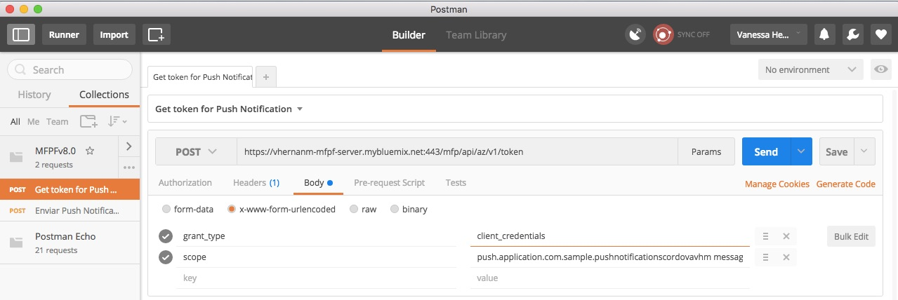
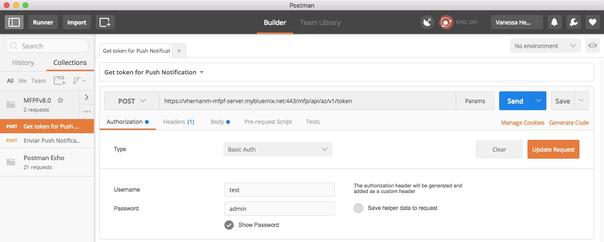
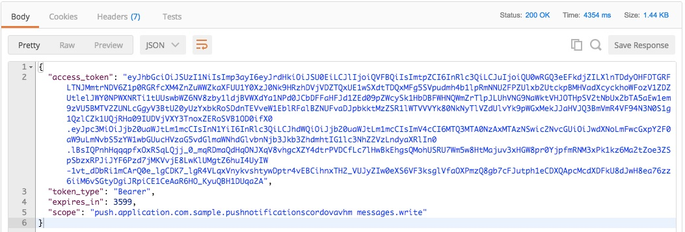

Cómo obtener un Token de Seguridad al Servidor de MobileFirst Platform Foundation
Para hacer el envío de Notificaciones Push, debe obtenerse un Token de Seguridad para autenticar la invocación de los servicios correspondientes REST hacia el Servidor de MobileFirst Platform.
Para llevar a cabo lo anterior, puede utilizarse una herramienta como Postman y ejecutar los siguientes pasos:
- Hacer una petición tipo POST a https://vhernanm-mfpf-server.mybluemix.net:443/mfp/api/az/v1/token.
- En el Body asegurarse de configurar lo siguiente:
- Seleccionar application/x-www-form-urlencoded como content-type
- Crear dos parámetros: grant_type, con el valor client_credentials; y scope con el valor push.application.com.sample.pushnotificationscordovavhm messages.write

- En la pestaña de "Authorization" seleccionar el tipo Basic Auth, nombre de usuario "test"y contraseña "admin".

- Hacer clic en "Send". La respuesta a esta petición incluirá un objeto JSON, en el cual podrá encontrarse un Token de Seguridad con validez de una hora.

Si en cualquier momento del Reto es necesario obtener otro Token para continuar, deberá ejecutarse este procedimiento, y posteriormente se podrán reanudar las actividades en el paso correspondiente.
Página principal